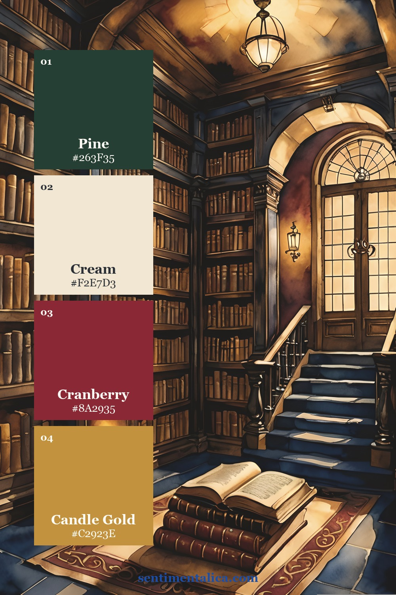

Pine, cranberry, candle gold, and cream make a classic Christmas palette when their proportions stay controlled. Use cream for breathing room and let the brighter holiday colors act as small signals.

Give the light neutral most of the page
Let the palest shade cover roughly half to two thirds of the spread. Use it for the page base, journaling block, photograph border, or open margin. This keeps seasonal color readable instead of heavy.
A neutral is not empty. Look for paper with fibers, faint printing, a deckled edge, or a slight temperature shift. Texture can provide interest while the value stays light enough for writing.
Use the darkest shade as structure
Place the dark anchor in one edge, title, pocket, or narrow strip. Repeat it once in a much smaller amount across the spread. Two controlled touches create connection without outlining everything.
Check the anchor beside the photograph. If it makes faces or shadow details disappear, reduce its area or move it farther from the image.
Want a low-pressure page to practise with? Open the 100 free floral pictures, choose one image that matches your palette, and try the method before using a favorite original.
Let the support color connect the layers
The middle shade belongs in torn paper, thread, labels, or a photograph detail. It should bridge the neutral and anchor rather than occupy the same amount of space as either one.
Repeat the support color three times at different scales: one medium scrap, one narrow strip, and one tiny mark. This creates rhythm without making the layout symmetrical.
Save the accent for the story
Use the strongest seasonal color in less than ten percent of the page. Place it beside the photograph, date, or sentence you want the eye to find first. If the accent appears everywhere, it stops being an accent.
Try a simple 60-25-10-5 balance
Use about sixty percent light neutral, twenty-five percent support color, ten percent dark anchor, and five percent accent. These are visual proportions, not measurements. Squint at the loose layout: the light field should dominate, and the accent should appear as one clear spark.
Adapt the palette to photographs
Pull the support color from a large quiet part of the photograph, such as a wall, coat, sky, or table. Use the accent only if it already appears in the image or can sit beside it without creating a color cast. Black-and-white photographs can tolerate a stronger accent, but they still need a clean neutral border.
Test the colors with materials you own
Gather scraps under warm and cool light. Remove any color that turns muddy beside the photograph. Exact matching is unnecessary; consistent value and temperature matter more than buying new supplies.
Make a reusable swatch strip
Glue four small offcuts to a bookmark-sized card and label their roles: neutral, anchor, support, accent. Keep it beside the project while choosing thread, tags, and ink. The strip makes editing easier and prevents an attractive fifth color from slowly taking over the page.
Know when the palette is finished
Before gluing, take a phone photograph and look at it as a thumbnail. The memory should remain first, the seasonal atmosphere second, and the accent third. If color wins over the photograph or writing, enlarge the neutral area. Stop when every shade has one clear job; additional matching pieces will not make the page more complete.